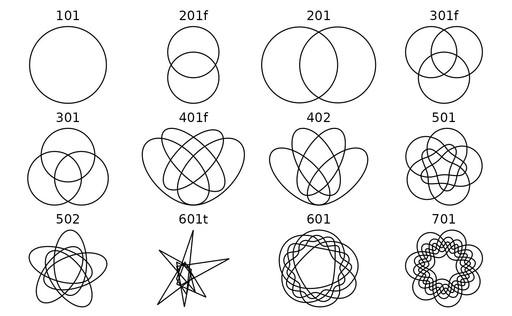
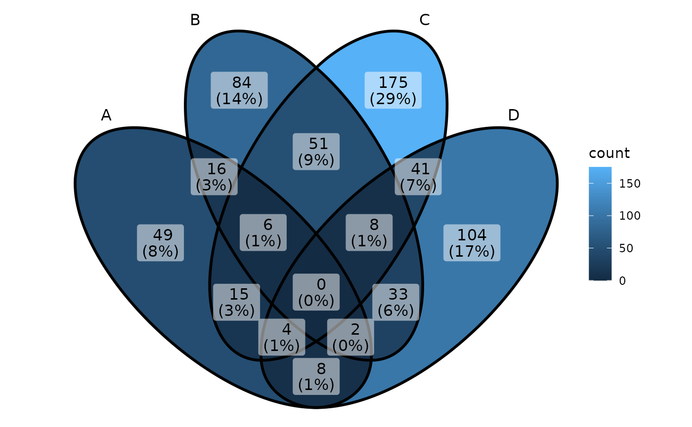

Internal Shapes
The ggVennDiagram package has a set of built-in
shapes that are used to plot Venn diagram. These internal data are
stored as sys data as a tibble. It can be accessed with
ggVennDiagram:::shapes and viewed by the function
get_shapes(), and plotted with the function
plot_shapes().
shape1 = ggVennDiagram:::shapes[[4]]
shape1
#> Class VennPlotData - '301f'
#> Type: circle; No. sets: 3; No. regions: 7.
#> To view this shape, use `plot_shape_edge(get_shape_by_id('301f'))`.
#> To view its components, use `venn_setedge()`, `venn_setlabel()`, etc.The format of these shapes data are defined in
VennPlotData class. Use ?VennPlotData to view
the document.
plot_shape_edge(shape1)
get_shapes() will extract the meta features of these
shapes and output a tibble. These information can be used for
sepecifying a shape either by its id, or type.
get_shapes()
#> # A tibble: 12 × 3
#> shape_id nsets type
#> <chr> <int> <chr>
#> 1 101 1 circle
#> 2 201f 2 circle
#> 3 201 2 circle
#> 4 301f 3 circle
#> 5 301 3 circle
#> 6 401f 4 ellipse
#> 7 402 4 polygon
#> 8 501 5 polygon
#> 9 502 5 polygon
#> 10 601t 6 triangle
#> 11 601 6 polygon
#> 12 701 7 polygonFor example, if you want to extract the shape whose id is “401f”.
This time we use ggplot2 functions to plot the set edge of
it.
library(ggplot2)
shape2 = get_shape_by_id("401f")
plot_shape_edge(shape2)The plot_shapes() function can be used to plot all the
available shapes stored in this package. Please note that the shapes for
this five sets diagram, as well as those for six and seven sets, are
imported from the original package “venn”, authored by Adrian Dușa.

Among them, the shapes with less than four sets can be generated with
circle or ellipses. For example, the parameters used to generate
four-set ellipses were adopted from VennDiagram (https://CRAN.R-project.org/package=VennDiagram).
Notably, those shapes of five or more sets, including 501, 502, 601, and
701, are collected by Adrian Dusa and provided in his venn
package (https://CRAN.R-project.org/package=venn). Besides, the
601t shape is imported from a WiKi entry (https://en.wikipedia.org/wiki/Venn_diagram).
Using alternative internal shapes
By default, only the most appropriate shape is used when calling the
main function ggVennDiagram(). However, it may be specified
in step wise plot which has been described in fully
customed plot.
For example:
# Generate example data.
genes <- paste0("gene",1:1000)
set.seed(20210701)
gene_list <- list(A = sample(genes,100),
B = sample(genes,200),
C = sample(genes,300),
D = sample(genes,200))
# construct a Venn object
venn = Venn(gene_list)
data = process_data(venn, shape_id = "402")
plot_venn(data)
Using a novel shape
If user knows the coordinates of a novel shape, it may also be used
to draw in ggVennDiagram. The functions of this part have
been transfered to a new R package shapeMageR, which can be
found in https://github.com/gaospecial/shapeMageR. To do this,
the dependency of ggVennDiagram is very light, thus
increase the accessibility of the package.
Reference
Adrian Dușa (2024) venn: Draw Venn Diagrams, R package version 1.12. https://CRAN.R-project.org/package=venn.